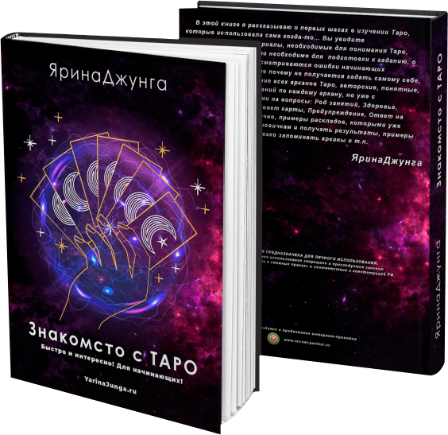

Содержание
В этой книге вы увидите познавательные материалы, необходимые для понимания Таро, информация о том, что необходимо для подготовки к гаданию, о защите Таролога, рассматриваются ошибки начинающих Тарологов, в том числе почему не получается гадать самому себе, а также дается значение всех арканов Таро, авторские, понятные, без масштабных описаний по каждому аркану, но уже с конкретными ответами на вопросы: Род занятий, Здоровье, Отношения, Бизнес советы, карты Предупреждение, Ответ на вопрос да-нет, и, конечно, примеры раскладов, которыми уже можно пользоваться новичкам и получать результаты, примеры как можно быстро и легко запоминать арканы и т.п.
